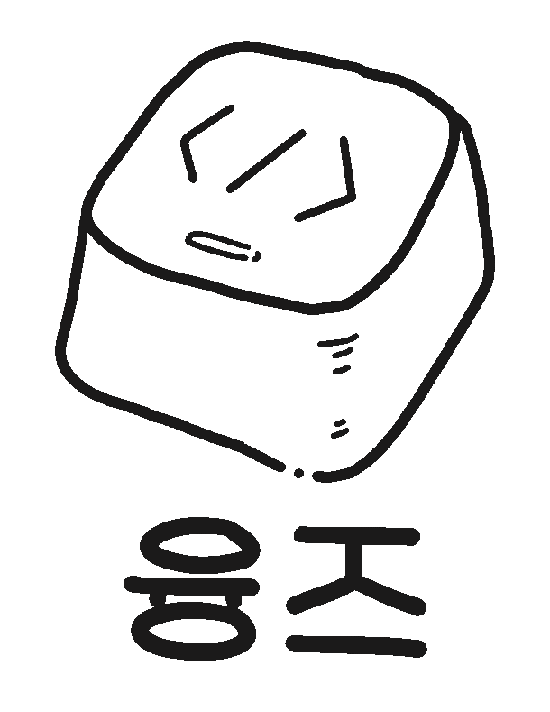

오늘도 행복하게 아자아자~!
play_arrow
pause
All That - Benjamin Tissot (Bensound.com) All That - Benjamin Tissot (Bensound.com)
홈
포트폴리오
기타
사진첩
다이어리
김윤주
UI UX Web Publisher
1990년 7월생
선문대학교 일어일본학과 졸업
(2009.03~2012.08)
더 조은 컴퓨터학원 UI/UX 컨텐츠디자인 제작과정 수료
(2019.07~2019.12)
<에덴> 웹퍼블리셔 근무중
(2020.12 ~ 현재)